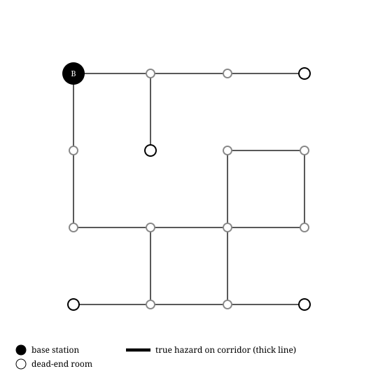
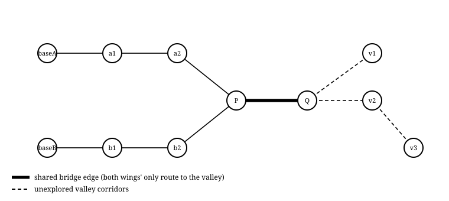
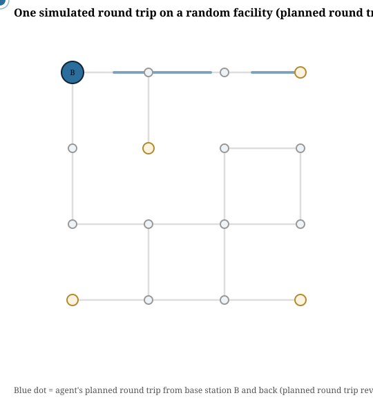
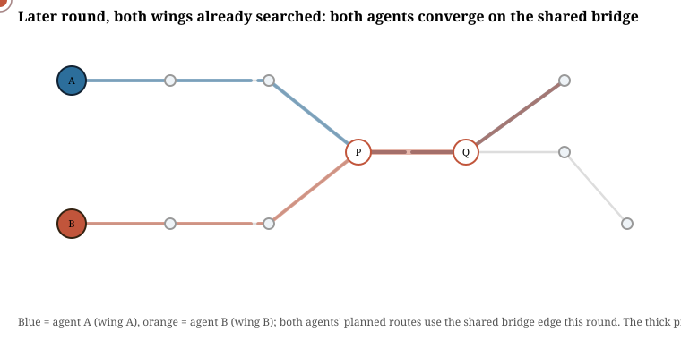
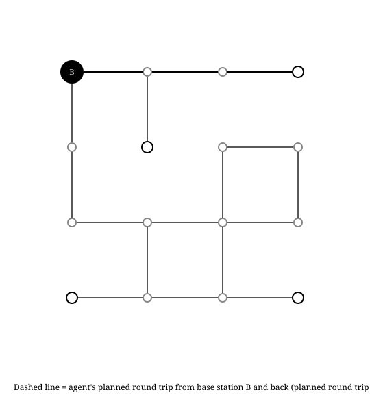
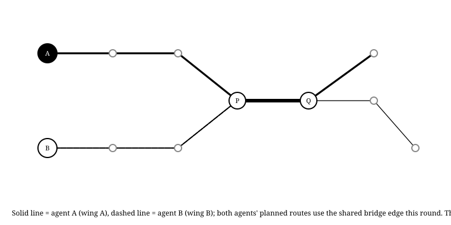
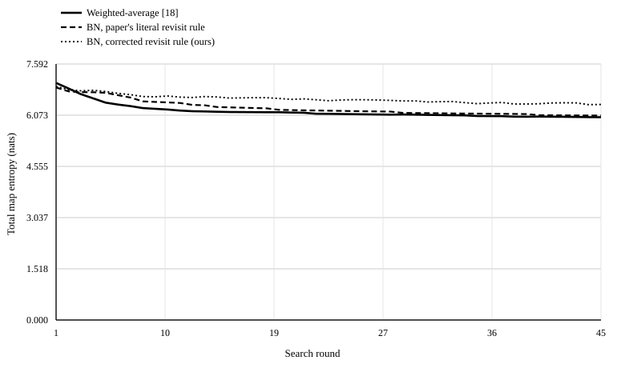
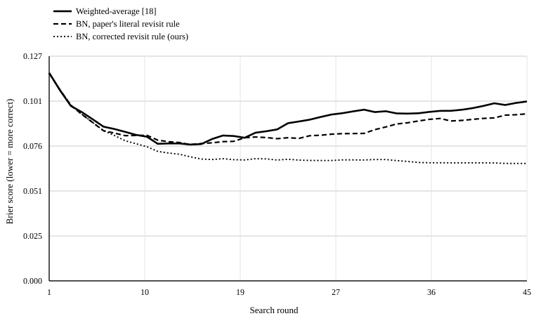
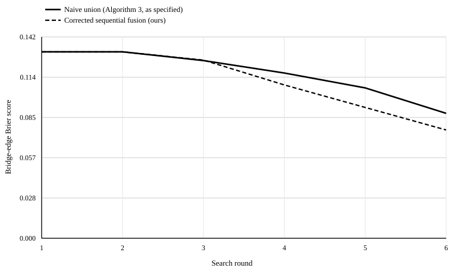
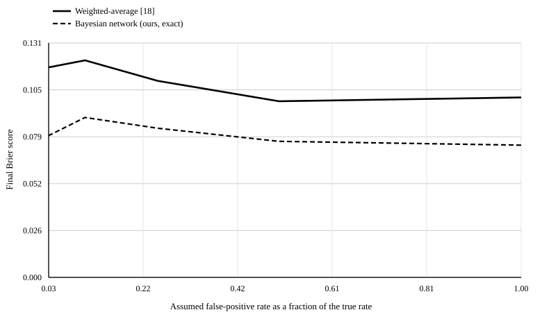

A "path-based sensor" produces a single observation for an entire traversed route rather than a measurement at a point. An expendable agent is sent along a path through a hazardous, communication-denied environment; if it returns, the sensor reads 0 (no hazard triggered anywhere on the path); if it does not, the sensor reads 1 (something happened, but not where). Fusing many such observations into a spatial hazard belief map, and choosing routes that gather information fastest, is the problem this report is about.
Srivastava, Kontoudis, Sofge and Otte introduce a Bayesian network formulation of this fusion step, replacing an earlier weighted-average heuristic used in prior work by the same group. The network models hazard existence, per-cell destruction and the resulting sensor trigger as a small directed acyclic graph, and derives closed-form posterior updates for a path that visits each cell at most once. Reported experiments, run on an open 15×15 continuous grid, show faster entropy convergence and fewer destroyed agents than the older method, for both single-agent and parallel multi-agent deployment.
This report documents an independent re-implementation of that method, and evaluates it on a deliberately different environment: graph-shaped corridor networks with dead ends and topological bottlenecks, meant to resemble collapsed buildings, tunnels and single-access road networks rather than open terrain. The choice is not cosmetic. Two of the three confirmed findings below exist only because the environment has a graph topology, and are structurally invisible on a continuous, cycle-rich grid. It contains:
src/inference.py);src/planner.py);src/environment.py);src/metrics.py);Sections 2 through 5 cover the method, the environments, the code, and the experimental setup. Section 6 reports results, including a stress test that came back inconclusive and is reported as such. Section 7 collects three confirmed gaps and one open question into standalone findings, and the remaining sections place this work against the paper's own cited follow-ups and list what it does not attempt.
Hazard existence per cell Z, per-cell destruction Delta, and the
path-level sensor trigger Theta form a three-layer Bayesian network: an
estimation layer (Z, the belief being maintained), an inference layer
(Delta, whether the agent was destroyed at each cell), and an observation
layer (Theta, the one bit actually seen). Given a survived path
(Theta = 0), the posterior for a visited cell follows the reference paper's Eq.
(7):
and given a triggered path (Theta = 1), the posterior for a given cell follows
Eqs. (5)-(6), computed by eliminating the other cells on the path. Both are stated only for a
path that visits each cell at most once.
The method the reference paper replaces (Otte & Sofge, 2021 [18]; Srivastava et al., 2022
[26]) computes, for a triggered path, the posterior belief map under each mutually exclusive
"destroyed at cell k" history separately, then combines the ell
histories weighted by their relative likelihood:
Both this and the Bayesian-network method above are implemented here exactly as published, so that the reported comparisons isolate the belief-update rule itself, not a re-derivation of either.
The reference paper's Remark 1 concedes that an agent may revisit a cell, and states only that
"the new likelihood P(Theta|Delta) is calculated by summing the probability of each
instance" - no formula is given, and the claim is not checked against the rest of the
derivation. We derive one. Let a round-trip path visit distinct cells e = 1..m,
with cell e visited n_e times. Conditioned on hazard state
z_e, each individual visit is an independent Bernoulli survival trial with
probability a_e = 1 - L (lethality L) if z_e = 1, or
b_e = 1 - fp (false-positive rate fp) if z_e = 0.
Surviving all n_e visits to e therefore has probability
a_e^n_e or b_e^n_e. Because the agent is destroyed on first
failure and does not continue, the observed Theta is a deterministic function of
whether any visit, anywhere on the path, failed:
Marginalising over the independent priors q_e gives a per-cell survival marginal
s_e = q_e·a_e^n_e + (1-q_e)·b_e^n_e, and Bayes' rule gives, for
a survived path:
and, for a destroyed path, with S = ∏_i s_i over all distinct cells on the
path:
Both reduce exactly to the reference paper's Eqs. (7) and (5)-(6) when n_e = 1
for every cell. A notable, easily overlooked property of (*) and (**): they depend on the path
only through each cell's visit count, not the order in which cells were visited - "a
failure happened somewhere" is a symmetric function of the underlying independent per-visit
outcomes, so a correct implementation needs only to count visits correctly, which the
paper's own Remark 1 language does not do (Section 6.1 shows what its literal reading produces
instead).
Four details are needed to run the method on a graph and are kept explicit here so a reader can see which parts are the reference method and which are this project's engineering.
| Addition | What it does |
|---|---|
| Round-trip planner | Enumerates "there-and-back" routes (out along a simple path, back the same way - forces a revisit) and "loop" routes (out and back by edge-disjoint simple paths, when the graph offers one), and scores every candidate by exact expected information gain using formula (*)/(**) above. |
| Shared planning trajectory | In every experiment, one canonical belief map decides which paths get walked and what happens on them; every compared update rule then replays that identical sequence of observations. This isolates each comparison to the update rule, not to different rules exploring different parts of the map. |
bn_paper_literal | A best-effort literal reading of Remark 1: a cell
visited n times contributes n times its single-visit destruction
probability (capped at 1), an additive approximation rather than the correct compounding of
survival probabilities in (*)/(**). |
| Ground-truth scoring | Every belief map is scored against the actual planted hazard map by Brier score, log loss and recall@k, in addition to entropy - see Section 5.2. |
The reference paper's own experiments use an open 15×15 grid with 8-connected movement in unobstructed 2D space. That choice has two consequences that happen to make both structural gaps in this report invisible. First, revisits never arise: in a grid with no walls, a path that would need to retrace a cell can almost always be rerouted through a neighbouring cell instead, so a round trip - which the paper's own Problem 1 formulation requires, "agents start and end their search rounds at their designated base stations" - is trivial to make revisit-free. Second, disjoint search-region partitions always exist: an entropy-weighted Voronoi diagram over a continuous, simply-connected 2D region can always be drawn so every point belongs to exactly one agent's region, by construction. A graph need not have either property, and surfacing what happens when it does not is the reason this report uses graph environments instead of a grid.
A 4×4 grid of rooms (16 nodes) starts fully connected (up to 24 candidate corridors), then corridors are randomly deleted (deletion probability 0.35) subject to two constraints: the floor plan must stay connected, and at least two dead-end rooms must remain. Across the 40 generated instances used in Section 6.1, the resulting floor plans averaged 16.7 corridors and 4.4 dead-end rooms (range 2-7). Ground-truth hazards are planted independently on each corridor with probability 0.15, matching the reference paper's cell-independence assumption.

Figure 1. A generated instance. Thin lines are corridors, thick lines carry a planted hazard; the filled node is the base station; open, larger nodes are dead ends the agent can reach only by using one corridor twice on any round trip.
A fixed, hand-designed 11-node facility: two independent wings (three rooms each, with their own base stations), a shared junction, one bridge corridor, and a three-room "valley" beyond the bridge that is, every round, the most information-rich unexplored part of the map.

Figure 2. Both wings' only route to the valley is the single marked bridge edge. This is deliberately the simplest possible graph exhibiting the structural problem in Section 6.2: not a rare or contrived layout, but the minimal shape of "two facilities sharing one access route to a place both need to search."
The committed HTML version of this report (report/echo_corridors_report.html,
opened in a browser rather than printed) embeds two looping SVG animations replaying one
representative simulated round each - a colour reproduction of Figures 3 and 4 below with a
moving agent marker rather than a single static route. They are SVG rather than GIF because the
project has no imaging-library dependency to encode one; see
make_animation.py for the reasoning. The static routes below are the print-safe
equivalent.


Live, looping colour replays (visible when this HTML file is opened in a browser; a printed page cannot play them, hence Figures 3-4 below).

Figure 3. One simulated round trip. The dashed route detours into a dead end and is forced to re-traverse the connecting corridor on the way back - the situation Section 6.1 is about.

Figure 4. A later round, after both wings have already searched their own three corridors down to near-certainty: both agents independently plan a route through the shared bridge to the still-unexplored valley in the same round. Solid = agent A, dashed = agent B; where the two lines coincide is exactly the shared edge both must use - the forced-overlap situation Section 6.2 is about.
Everything is a from-scratch, dependency-free Python 3 implementation - no numpy/scipy/matplotlib, so environment, inference and planning logic are all auditable in a few hundred lines each, and the figures in this report are drawn by a small built-in SVG writer rather than a plotting library.
| File | Role |
|---|---|
src/environment.py | Graph environments: random pruned-grid facility generator, fixed bottleneck facility, independent per-edge hazard planting. |
src/inference.py | Three belief-update rules plus the derivation of the corrected multi-visit closed form (Section 2.3). |
src/planner.py | Greedy expected-information-gain round-trip path planner: enumerates candidate routes and scores them by exact expected entropy reduction. |
src/metrics.py | Entropy, Brier score, log loss and recall@k against planted ground truth. |
src/svgplot.py | Dependency-free SVG line-chart writer used for every chart in this report. |
experiment{1,2,4}_*.py | The three Monte Carlo experiments in Section 6. |
make_diagrams.py, make_animation.py | Static and animated figures of both environments, colour and black-and-white variants. |
Both Experiment 1 and Experiment 2 (Sections 6.1-6.2) hold the sequence of paths taken and outcomes observed fixed across the methods being compared - one canonical, best-available belief map always drives planning decisions, and every compared update rule is then replayed against that same sequence. This isolates the comparison to the quality of the belief-update rule itself, rather than confounding it with different methods exploring different parts of the map because their beliefs happened to diverge.
| Experiment | Environment | Trials | Rounds | Lethality | False positive | Hazard prior |
|---|---|---|---|---|---|---|
| 1 - revisit handling | Random facility | 40 | 45 | 0.85 | 0.04 | 0.15 |
| 2 - bottleneck overlap | Bottleneck facility | 400 | 6 | 0.85 | 0.04 | 0.20 |
| 4 - rate misspecification | Random facility | 30 / setting | 40 | 0.85 (true) | 0.04 (true) | 0.15 |
Seeds are fixed in each script (20260906,
8675309, 42424242 respectively); re-running reproduces every number in
this report exactly.
The reference paper evaluates convergence with a single metric: total Shannon entropy of the belief map, plus a count of destroyed agents. Entropy measures how confident a belief map is, not how correct it is - a confidently wrong map has low entropy and looks, by that metric alone, like a success. Alongside entropy, every result below also reports:
k highest-belief cells against the true hazard set,
with k set to the true hazard count.Three update rules replay the identical sequence of planned paths and observed outcomes each
round (Section 4.2): weighted_average (the pre-existing method [18]/[26], applied
to a revisiting path exactly as its own equations read, since it was never extended for
revisits either); bn_paper_literal (Section 2.4's best-effort literal reading of
Remark 1); and bn_exact (the corrected closed form, Section 2.3). Across the 40
trials, agents revisited some corridor an average of 135 extra times per trial over 45 rounds -
about three extra visits per round - confirming that in a corridor-network environment, the
situation Remark 1 waves at is close to the common case, not a rare edge case.
| Method | Entropy [nats] | Brier score | Log loss | Recall@k |
|---|---|---|---|---|
| Weighted-average [18] | 6.014 | 0.135 | 0.803 | 0.298 |
| BN, paper's literal revisit rule | 6.062 | 0.128 | 0.691 | 0.202 |
| BN, corrected revisit rule (ours) | 6.391 | 0.133 | 0.428 | 0.273 |
The literal revisit rule reaches the lowest entropy of the three - it looks the most converged - while having the worst log loss of the two Bayesian-network variants (0.691 vs. 0.428, a 62% relative gap) and worse recall@k than either alternative.

Figure 5. Belief-map entropy vs. search round. The literal revisit rule (dashed) converges to visibly lower entropy than the corrected rule (dotted) - it looks better converged by the paper's own metric.

Figure 6. Brier score against the same ground truth. The ranking inverts: the corrected rule (dotted) is the most accurate throughout, and the literal revisit rule (dashed) is no better than weighted-averaging (solid) despite its lower entropy in Figure 5.
A concrete instance: in one trial, an edge with no planted hazard was visited twice in a single round trip that ended in the agent's destruction elsewhere on the same path. Starting from the shared prior of 0.15:
| Method | Belief before | Belief after |
|---|---|---|
| Weighted-average | 0.150 | 0.374 |
| BN, paper's literal revisit rule | 0.150 | 0.287 |
| BN, corrected revisit rule (ours) | 0.150 | 0.288 |
At only two visits - the least possible in this environment, since a there-and-back round trip visits every outbound edge exactly twice and no more - the literal and corrected rules are still close. The divergence in Table 1 accumulates from many such two-visit updates recurring on the same frequently used corridors across dozens of rounds, not from any single dramatic event, which is exactly why the paper's own single-round formulation would not have surfaced it.
On the bottleneck facility (Section 3.2), one shared best-available belief map decides both
wings' routes each round (Section 4.2), and two ways of folding the round's two independent
observations back into the shared map are compared: naive_union (exactly Algorithm
3 as specified - each base station computes its local posterior in parallel from the same
round-start prior, and the server unions the two local results, discarding one agent's
observation of any edge both happened to touch) and corrected_fusion (the server
instead composes both agents' observations sequentially into the shared prior, which Section 2.3
shows is exact for conditionally-independent evidence about a shared variable). Across 400
trials of 6 rounds each, both wings' planned routes used the shared bridge edge in 18.9% of the
2,400 simulated rounds.
| Condition | Naive union | Corrected fusion |
|---|---|---|
| Bridge Brier, rounds with forced overlap (n=453) | 0.088 | 0.062 |
| Bridge Brier, rounds without overlap (n=1,947) | 0.123 | 0.122 |
| Final-round bridge entropy | 0.290 | 0.259 |
| Final-round bridge Brier score | 0.088 | 0.076 |
| Final-round whole-map Brier score | 0.068 | 0.063 |
In rounds where the bottleneck was actually shared, discarding one agent's observation left the bridge edge's belief about 30% less accurate than properly fusing both. In rounds without overlap the two strategies are statistically indistinguishable, as expected - the naive union is only wrong precisely when it has to make a choice it should not have to make.

Figure 7. Bridge-edge Brier score vs. search round. Corrected fusion (dashed) stays below naive union (solid) from the first round in which overlap can occur onward.
Algorithm 3's parallel local computation followed by a plain set union is exact if, and only if, the per-round regions are disjoint. The entropy-weighted Voronoi partitioning this builds on constructs regions that are disjoint by construction in continuous 2D space. A graph environment with a cut edge has no such guarantee: the bridge edge here is not merely difficult to partition well, it is topologically impossible to assign to one wing without physically cutting the other wing off from the valley. No amount of better Voronoi weighting fixes this, because the problem is not the partitioning heuristic - it is the assumption that a partition can always be found.
This is not a separate experiment; it is a pattern visible in both results above. In Section 6.1, the literal revisit rule reaches lower final entropy (6.062 vs. 6.391 nats, Table 1) than the corrected rule while having 62% worse log loss - by the paper's own metric the literal rule looks better converged; by any proper scoring rule against the actual planted hazards, it is the worse one. In Section 6.2, naive union's higher final entropy (0.290 vs. 0.259, Table 3) happens to agree with its worse Brier score, because that case really is throwing away information rather than manufacturing false certainty. The contrast between the two results is itself informative: entropy can either overstate or roughly track correctness depending on why it changed, which is exactly why it cannot be relied on alone to tell the two situations apart without an independent check against ground truth - a check a simulation study can run and a real deployment cannot.
The reference paper tests robustness to false positives and negatives, but in every reported run the belief-update rule is handed the same rates used to generate the simulated world. A real deployment estimates these rates from limited field data and is likely to get them at least somewhat wrong, often in the optimistic direction. Holding the true simulated lethality (0.85) and false-positive rate (0.04) fixed, the rate handed to both the planner and the belief update was swept away from the truth: a false-positive shrink sweep (assumed rate at 100%, 50%, 25%, 10% and 2% of the true value) and a lethality bias sweep (assumed value biased −35% to +35% relative to the truth), 30 trials per setting, 40 rounds per trial.
| Assumed false positive | WA Brier | BN Brier | WA log loss | BN log loss |
|---|---|---|---|---|
| 100% of true (correct) | 0.147 | 0.139 | 0.831 | 0.440 |
| 50% | 0.157 | 0.147 | 0.817 | 0.465 |
| 25% | 0.137 | 0.135 | 0.687 | 0.431 |
| 10% | 0.157 | 0.150 | 0.976 | 0.460 |
| 2% | 0.147 | 0.136 | 0.815 | 0.425 |
The lethality bias sweep (not tabulated) shows the same pattern: BN log loss stays in 0.39-0.51 across all seven levels tested, weighted-average ranges 0.59-0.98. Brier-score differences between the two methods are small (at most 0.011) and mostly within one run-to-run standard deviation at this sample size (≈0.04-0.08, n=30).

Figure 8. Final Brier score vs. assumed false-positive rate. Both methods move within a narrow band with no consistent monotonic trend at this sample size.
This stress test set out to find a differential robustness failure - a setting where the Bayesian-network method's reported noise resilience breaks down once the assumed rate, not just the noise itself, is wrong. It did not find one at this sample size: if anything, the Bayesian-network method's log-loss advantage over weighted-averaging persisted across every tested level. Two caveats limit how much weight this negative result can bear: the assumed rate affects both the planner's chosen routes and the belief update at once, so a confound between different exploration behaviour and different inference quality is not ruled out here the way it was in Sections 6.1-6.2; and n=30 trials per setting is enough to see the log-loss pattern clearly but not enough to rule out a smaller Brier-score effect. This is reported rather than omitted: an inconclusive, honestly run stress test the published literature has not attempted is still evidence, and the question remains open for a larger-scale follow-up.
Three properties of the reference method are worth stating on their own, because they are not obvious from the paper or from its own reported experiments and only appear once the method is measured on an environment its own evaluation never used. A fourth is reported as an open question rather than a confirmed gap.
Observation. The reference paper's Remark 1 states that a revisited cell's likelihood is found by "summing the probability of each instance," without giving the resulting formula. Taking that literally and comparing it against the exact closed form derived in Section 2.3, on a floor plan that forces an average of three extra revisits per round, the literal rule reaches 62% worse log loss against ground truth after 45 rounds, while reaching lower entropy - it looks more converged while being less correct.
Why it matters. The paper's formal problem statement requires round trips ("agents start and end their search rounds at their designated base stations"), which is exactly the condition that forces revisits whenever the environment is not fully cyclic. Its own reported experiments use one-way point-to-point traversal on an open grid, which never revisits a cell and therefore never exercises Remark 1 at all. The gap survives publication not because the mathematics is subtle - the correct closed form is a two-line derivation - but because the evaluation environment cannot trigger the code path that needed it.
Observation. Algorithm 3's per-round server merge is a plain set union of two independently computed local posteriors, valid only if the two agents' regions never overlap. On a facility where both wings' only route to a shared valuable region is one bridge edge, both agents' routes used that edge in 18.9% of 2,400 simulated rounds; the specified union then discards one agent's observation of it, leaving that edge about 30% less accurate than a corrected fusion in the rounds it actually happens.
Why it matters. An entropy-weighted Voronoi partition over continuous 2D space is disjoint by construction. A graph with a cut edge - a single bridge, a single elevator shaft, a single mountain pass - has no such guarantee, and no amount of better Voronoi weighting fixes it, because the problem is not the partitioning heuristic, it is the assumption that a partition can always be found. Any real deployment with a genuine chokepoint inherits this exactly as built here.
Observation. The reference paper's sole convergence metric is Shannon entropy of the belief map. In Finding 1, lower entropy accompanied a worse belief (overconfidence from double-counted evidence); in Finding 2, higher entropy accompanied a worse belief (information genuinely discarded). Entropy moved in opposite directions relative to correctness across the two findings.
Why it matters. A belief map's entropy is a statement about its internal consistency, computable without the true hazard locations. Correctness requires comparing against something the estimator does not have access to in the field - but a simulation study, unlike a real deployment, has the ground truth, and not using it to check for exactly this kind of silent miscalibration leaves failure modes like Finding 1 undetectable by the paper's own reported figures.
Observation. Feeding the belief update a false-positive or lethality assumption that does not match the true simulated rate did not produce a clear, sample-robust degradation gap between the Bayesian-network method and weighted-averaging at n=30 trials per setting; the Bayesian-network method's log-loss advantage in fact persisted across every level tested.
Why it matters. The reference paper never tests this axis - its inference procedure always knows its own noise level exactly, because the same numbers generate the world and update the belief. This report's stress test is a harder, more realistic test than the paper's own, and it is reported as an honest negative result: it does not confirm the paper's resilience claim extends to this regime, but it also failed to falsify it, and a larger-scale follow-up is needed before either conclusion is warranted.
The reference paper cites several follow-ups by its own authors and others. Based on their published titles and abstracts, none address the three confirmed findings above.
McGuire, Otte & Sofge (2024) [13], "Valuing attrition in a fleet of robots used as path-based sensors," studies how to price the loss of agents against information gained - a decision-theoretic question about when to stop searching, not about whether a given belief update is numerically correct under revisits or overlapping partitions.
Mendelsohn, Sofge & Otte (2024) [14], "Enhancing search and rescue... through path-based sensors with backtracking," studies backtracking as a deliberate planning strategy rather than as an unavoidable structural property of corridor topology, and does not, from its abstract, address the Bayesian-network posterior's correctness under repeat visits.
Srivastava, Suresh & Nieto-Granda (2025) [25], "Behaviorally adaptive multi-robot hazard localization in failure-prone, communication-denied environments," addresses adapting agent behaviour to failure-prone conditions - closer in spirit to Finding 4's misspecification question, but framed around behavioural adaptation rather than auditing the inference update's calibration under a wrong assumed fault model, and does not appear to use a graph-topology environment.
None of the cited works, as far as their titles and abstracts indicate, use a graph environment with a genuine topological cut edge, and none formalise or test the multi-visit closed form derived in Section 2.3. The environment design in Section 3 was chosen specifically to expose gaps that a continuous, cycle-rich search space cannot.
Several choices bound how far these results generalise, and are listed here rather than left implicit.
Two extensions would sharpen this work further: a distributed reconciliation protocol for Algorithm 3 that detects a shared edge before the union step and fuses it correctly rather than requiring a centralised planning belief (used here only to keep the comparison controlled), and a misspecification sweep large enough in trial count to bound the Brier-score effect Section 6.4 could not resolve.
Every number and figure in this report comes from the committed repository, at the seeds named in Table 1 of Section 5.1.
python experiment1_revisits.py.python experiment2_bottleneck.py.python experiment4_misspecification.py.python make_diagrams.py.python make_animation.py.python make_print_figures.py, run after the
three experiment scripts above.No third-party dependencies are required; everything uses the Python 3 standard library. The
report itself is report/echo_corridors_report.html; the PDF alongside it is that
file printed to Letter paper.